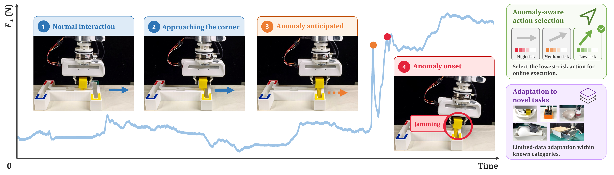
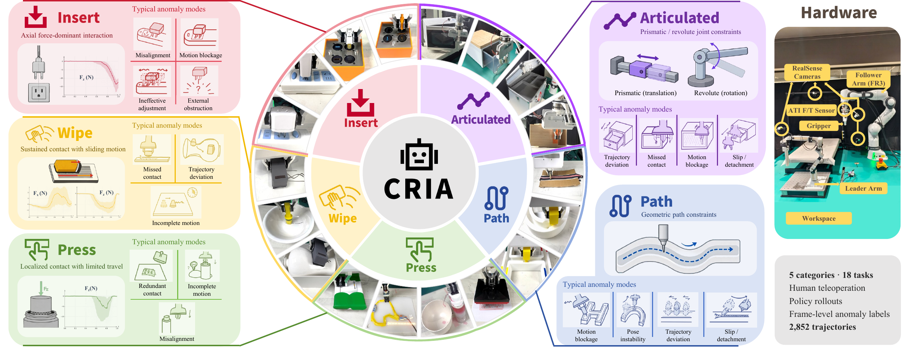
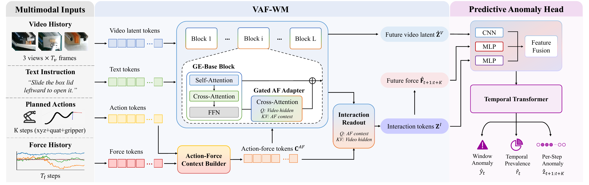
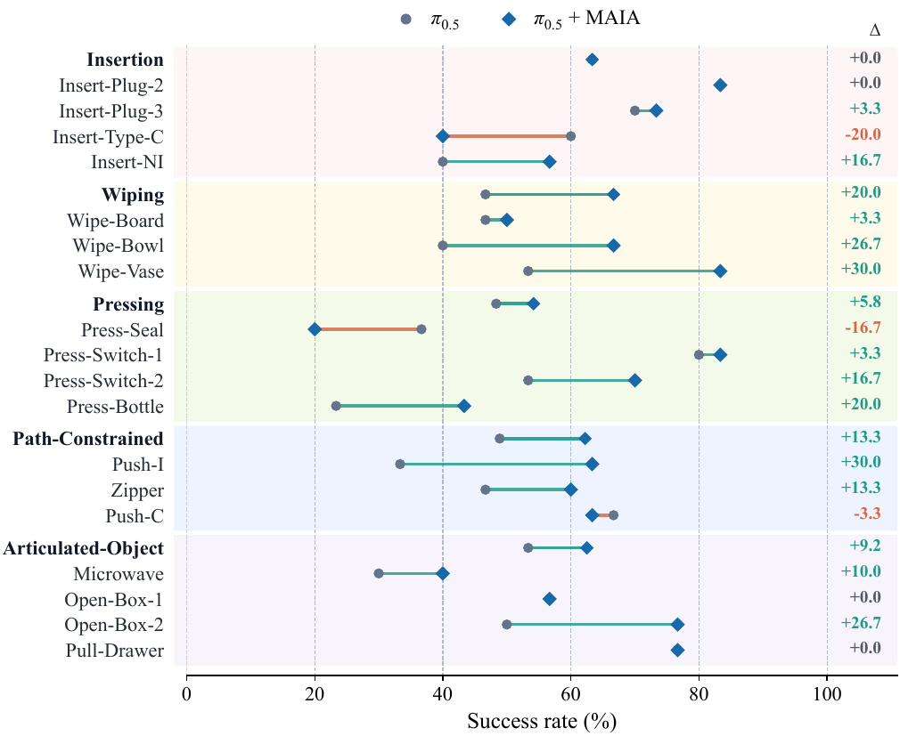

CONTACT-RICH ROBOT MANIPULATION
MAIA: Anticipating Interaction Anomalies in Contact-Rich Manipulation via Multimodal World Models
School of Artificial Intelligence, Shanghai Jiao Tong University
* Corresponding author

Abstract
Reliable contact-rich manipulation requires detecting execution deviations early enough for corrective action. Yet most monitoring methods are reactive, identifying anomalies only after they become observable. Anticipating such anomalies is challenging because visual observations only partially reveal physical interaction, while planned actions describe intended motion rather than their actual physical consequences. We address this problem with MAIA, a multimodal framework for anomaly anticipation. Its vision–action–force world model learns nominal interaction dynamics and predicts the visual and force responses of planned actions, while a lightweight anomaly head predicts impending interaction anomalies. To enable systematic evaluation, we introduce CRIA, a real-world multimodal dataset of 2,852 trajectories spanning 18 contact-rich manipulation tasks, with frame-level annotations of anomaly onset and evolution. Experiments on both seen and novel tasks show that MAIA achieves more accurate anomaly discrimination than representative baselines while providing earlier warnings. Moreover, using these predictions for anomaly-aware action selection improves end-to-end task success without retraining the underlying manipulation policy.
Dataset
We introduce CRIA, a real-world multimodal dataset for contact-rich interaction anomaly anticipation. CRIA contains 2,852 trajectories across 18 manipulation tasks and five task categories, including 1,817 trajectories with at least one annotated anomalous event. Each trajectory synchronizes multi-view visual observations, robot states and actions, and force/torque measurements. Unlike datasets that only record final success or failure, CRIA provides frame-level anomaly annotations that localize when anomalous interactions emerge, persist, and potentially recover. This enables systematic evaluation of both anomaly discrimination and early anticipation across seen and novel tasks.

METHOD
Method
MAIA predicts the physical consequences of candidate actions before they are executed. A Vision–Action–Force World Model forecasts future visual and force dynamics from interaction history and planned actions. A temporal anomaly head fuses these predictions with interaction tokens to estimate whether, when, and for how long an anomalous interaction will emerge. For novel tasks, MAIA supports limited-data adaptation by jointly adapting the action–force pathway and anomaly head while preserving the learned visual dynamics. These predictions can also guide anomaly-aware action selection.

EXPERIMENT 1
Experiment: Anomaly Anticipation
We evaluate anomaly anticipation on seen and novel tasks. MAIA models future visual and force responses over the prediction horizon and predicts anomalous interactions before their onset. It achieves the strongest discrimination and the longest anticipation lead time among the compared methods.
Quantitative comparison
| Method | Seen Tasks | Novel Tasks | ||||||
|---|---|---|---|---|---|---|---|---|
| AUPRC↑ | bACC↑ | AR↑ | Med. ALT↑ | AUPRC↑ | bACC↑ | AR↑ | Med. ALT↑ | |
| PCA-KMeans | 0.488 | 0.576 | 0.113 | 14.3 | 0.589 | 0.508 | 0.142 | 16.4 |
| LogpZO | 0.551 | 0.619 | 0.145 | 16.0 | 0.556 | 0.504 | 0.161 | 24.6 |
| SAFE-LSTM | 0.583 | 0.724 | 0.182 | 18.8 | 0.426 | 0.495 | 0.103 | 22.2 |
| Robo-Dopamine | 0.411 | 0.523 | 0.352 | 18.9 | 0.500 | 0.546 | 0.361 | 17.4 |
| Robometer | 0.356 | 0.512 | 0.320 | 12.0 | 0.469 | 0.524 | 0.377 | 15.3 |
| WCM | 0.669 | 0.702 | 0.242 | 17.7 | 0.519 | 0.539 | 0.219 | 14.3 |
| MAIA (Ours) | 0.738 | 0.765 | 0.464 | 28.0 | 0.728 | 0.710 | 0.408 | 25.1 |
Videos
EXPERIMENT 2
Experiment: Real-Robot Policy Integration
We use MAIA’s anomaly predictions to select among candidate action chunks during real-robot execution. At each planning step, the anomaly-aware policy chooses the action with the lowest predicted anomaly probability. Across all 18 tasks, this improves task success from 52.6% to 61.5% without retraining the underlying manipulation policy.

Videos
BibTeX
@article{qiao2026maia,
title={MAIA: Anticipating Interaction Anomalies in Contact-Rich Manipulation via Multimodal World Models},
author={Qiao, Yi and Zheng, Maolin and Sun, Haoran and Dong, Lujia and Lian, Wenzhao},
year={2026}
}